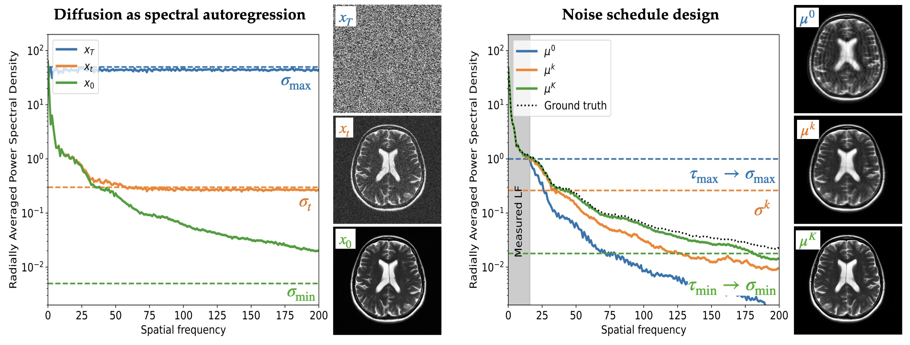

1. Choosing the start and stop noise levels
Diffusion models reconstruct images through a sequence of steps at decreasing noise levels. We derive rules for where this sequence should start and stop: the starting point depends on which image details remain unknown after using the measurements, while the stopping point accounts for the noise already present in the data.
Instead of tuning absolute noise levels for each new problem, we express these rules using two relative tolerances. These settings adapt to the properties of the data and measurements, making them easier to reuse across problems. Because the rules do not depend on a particular reconstruction algorithm, other diffusion-based solvers can use them too.

The equations behind the start and stop rules
The start rule assumes that the broad image structure, represented by low frequencies, is known exactly. ΣH|L describes the remaining uncertainty in finer details, and νmax is its largest eigenvalue. The tolerance τmax limits the relative reduction in uncertainty at the first step. In practice, we use the smallest starting noise level allowed by this bound.
The stop rule accounts for the noise already present in the data, with variance σs2. The tolerance τmin sets how close the remaining uncertainty should be to the best attainable level. This simpler expression applies when the signal is strong relative to the noise; the paper gives the full bound.